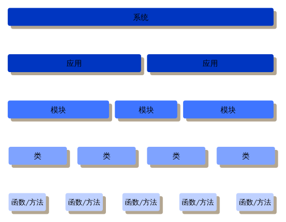
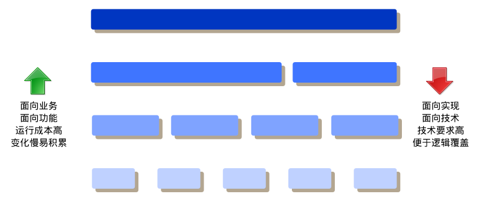
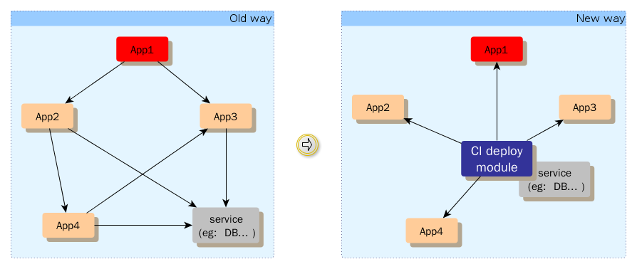
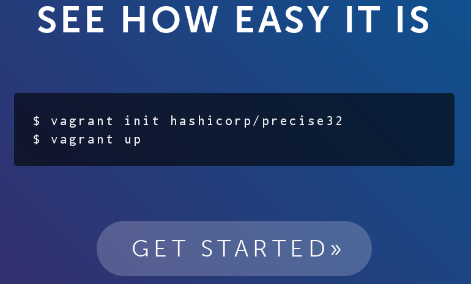
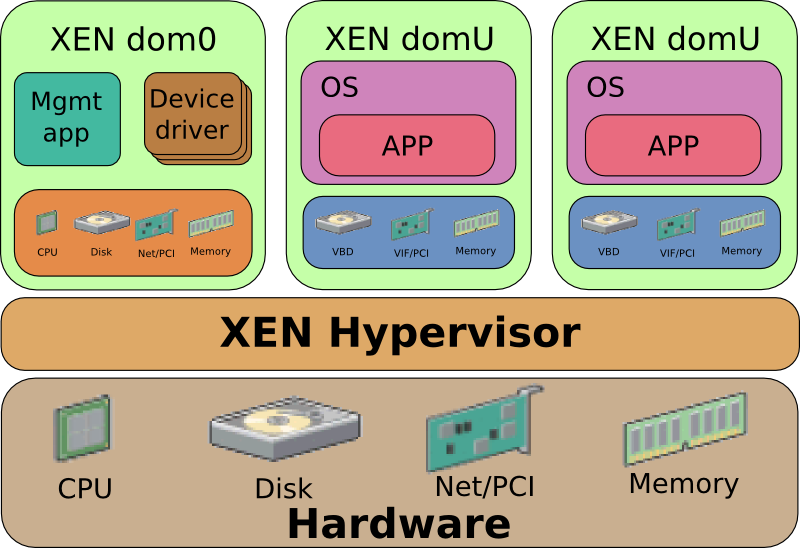
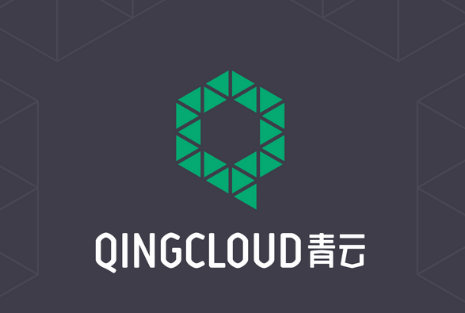
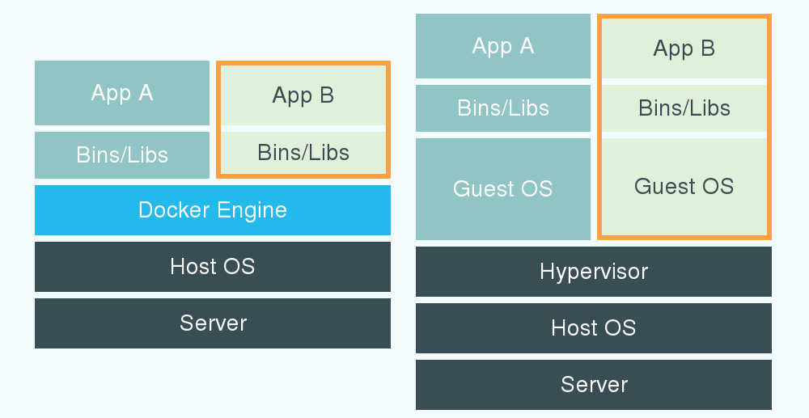

# .cise.yml image: xxx count: 3 prepare: exec: - deploy.sh $ip1, $ip2, $ip3
# project a: .cise.yml depend_on: url: b_url run: bind.sh $self_ip # project b: .cise.yml start: exec: start.sh




/